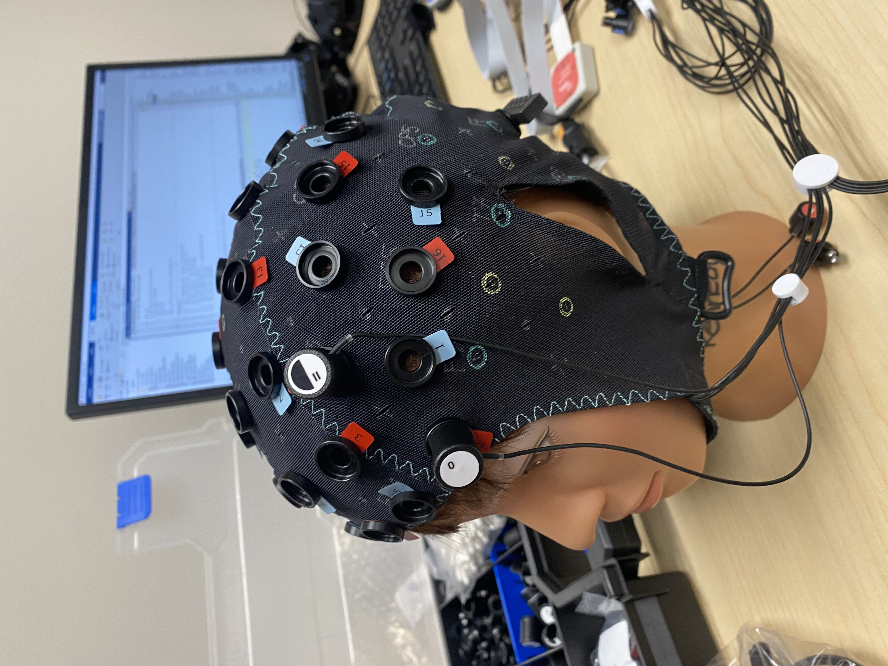
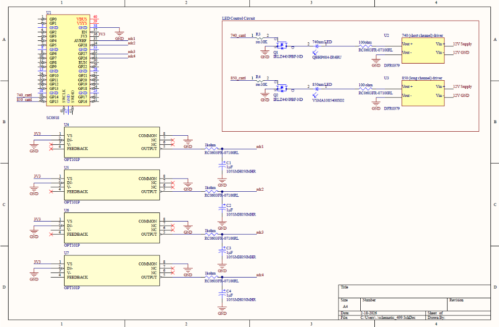
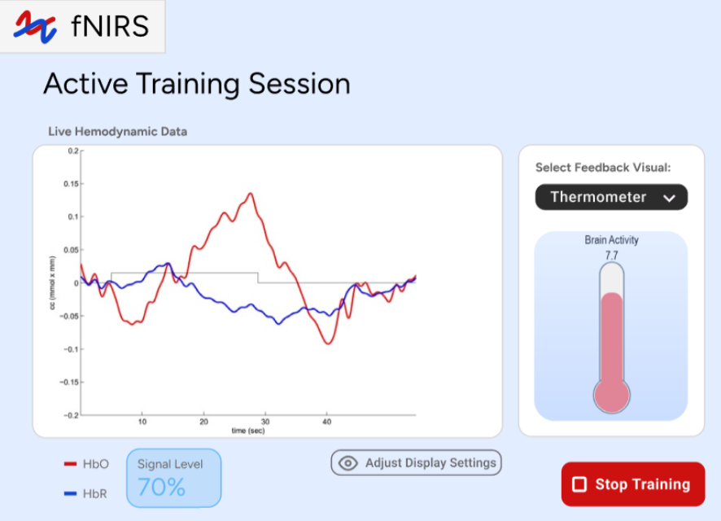
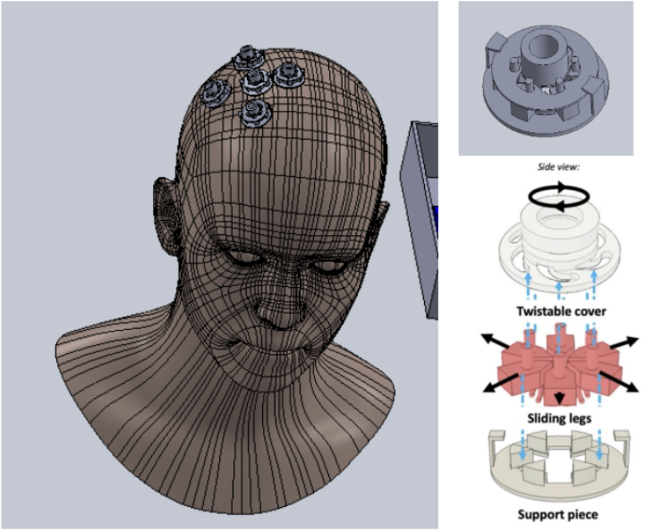

Capstone project that encompasses the hardware, firmware, electrical, software and mechanical design of a low-cost, non-invasive fNIRS neurorehabilitation system for motor cortex signal detection. This project is in collaboration with Western University in Ontario.
The system is programmed to detect changes in deoxy- and oxy-hemoglobin in the brain's motor cortex, and display the signal on a clinician-friendly GUI in real-time. The signal data is collected and processed in a python script using a Raspberry Pi Pico.

Includes near-infrared LEDs, buck converters for voltage step-down, photodiodes, MOSFETS for frequency modulation, low-pass filters for dark noise, and Raspberry Pi Pico.

Displays the required signals without overwhelming the clinician with unnecessary information.

Placed on the head to clear hair from area of interest quickly and efficiently, reducing noise.
One of the main challenges was getting a good signal. This work is still in progress but implementing a band-pass filter and adjusting the illumination power are methods used to improve SNR (signal-to-noise ratio).
For this project I owned the electrical and mechanical design of the device, as well as decisions on all ordering. Our capstone group is registered to compete in the Simon Cox Design competition in the end of April as well as presenting our work at UVic BME's Capstone presentation day at the beginning of April. Stay tuned for more progress!